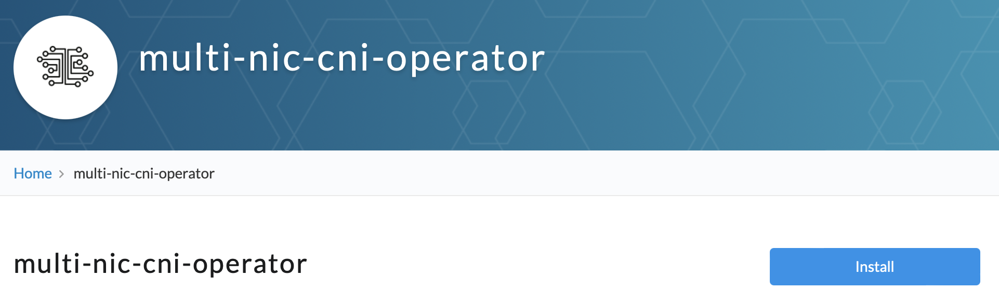
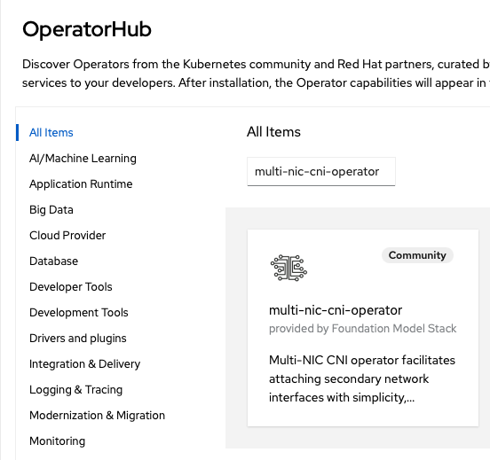
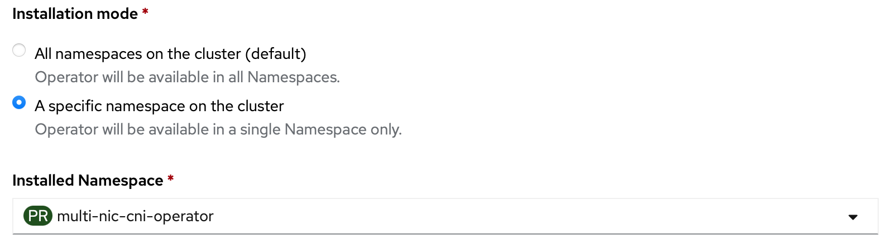

User Guide
Requirements
- Secondary interfaces attached to worker nodes, check terraform script here.
- Multus CNI installation; compatible with networkAttachmentDefinition and pod annotation in multus-cni v3.8
- For IPVLAN L3 CNI, the following configurations are additionally required
- enable allowing IP spoofing for each attached interface
- set security group to allow IPs in the target container subnet
- IPVLAN support (kernel version >= 4.2)
Quick Installation
by OperatorHub
- Kubernetes with OLM:
- check multi-nic-cni-operator on OperatorHub.io

- check multi-nic-cni-operator on OperatorHub.io
- Openshift Container Platform:
- Search for
multi-nic-cni-operatorin OperatorHub
- Search for
Recommended to deploy in the same default namespace for health check service, which is multi-nic-cni-operator.

(available version >= v1.0.5)
by manifests with kubectl
kubectl apply -f deploy/
by bundle with operator-sdk
operator-sdk run bundle ghcr.io/foundation-model-stack/multi-nic-cni-bundle:v1.0.5 -n multi-nic-cni-operator
Deploy MultiNicNetwork resource
MultiNicNetwork CR
# network.yaml
apiVersion: multinic.fms.io/v1
kind: MultiNicNetwork
metadata:
name: multi-nic-sample
spec:
subnet: "192.168.0.0/16"
ipam: |
{
"type": "multi-nic-ipam",
"hostBlock": 6,
"interfaceBlock": 2,
"vlanMode": "l3"
}
multiNICIPAM: true
plugin:
cniVersion: "0.3.0"
type: ipvlan
args:
mode: l3
attachPolicy:
strategy: none
namespaces:
- default
| Argument | Description | Value | Remarks |
|---|---|---|---|
| subnet | cluster-wide subnet for all hosts and pods | CIDR range | currently support only v4 |
| hostBlock | number of address bits for host indexing | int (n) | the number of assignable host = 2^n |
| ipam | ipam plugin config | string | ipam can be single-NIC IPAM (e.g., whereabouts, VPC-native IPAM) or multi-NIC IPAM (e.g., Multi-NIC IPAM Plugin) |
| multiNicIPAM | indicator of ipam type | bool | true if ipam returns multiple IPs from masters key of NetworkAttachmentDefinition config at once, false if ipam returns only single IP from static config in ipam block |
| plugin | main plugin config | NetConf + plugin-specific arguments | main plugin integration must implement Plugin with GetConfig function |
| attachPolicy | attachment policy | policy | strategy with corresponding arguments to select host NICs to be master of secondary interfaces on Pod |
| namespaces | list of namespaces to apply the network definitions (i.e., to create NetworkAttachmentDefinition resource) | []string | apply to all namespace if not specified. new item can be added to the list by kubectl edit to create new NetworkAttachmentDefinition. the created NetworkAttachmentDefinition must be deleted manually if needed. |
-
Prepare
network.yamlas shown in the example -
Deploy the network definition.
kubectl apply -f network.yamlAfter deployment, the operator will create NetworkAttachmentDefinition of Multus CNI from MultiNicNetwork as well as dependent resource such as SriovNetworkNodePolicy, SriovNetwork for sriov plugin.
-
Annotate the pod with the network name to attach additional interfaces.
metadata: annotations: k8s.v1.cni.cncf.io/networks: multi-nic-sample
Check connections
One-time peer-to-peer
This is a quick test by a randomly picked-up pair.
-
Set target peer
export SERVER_HOST_NAME=<target-server-node-name> export CLIENT_HOST_NAME=<target-client-node-name>If the target peer is not set, the last two of listed nodes will be selected as server and client, respectively.
-
Run the test
make sample-concheckExample output:
# pod/multi-nic-iperf3-server created # pod/multi-nic-iperf3-server condition met # pod/multi-nic-iperf3-client created # pod/multi-nic-iperf3-client condition met # [ 5] local 192.168.0.66 port 46284 connected to 192.168.0.130 port 5201 # [ ID] Interval Transfer Bitrate Retr Cwnd # [ 5] 0.00-1.00 sec 121 MBytes 1.02 Gbits/sec 0 3.04 MBytes # [ 5] 1.00-2.00 sec 114 MBytes 954 Mbits/sec 0 3.04 MBytes # [ 5] 2.00-3.00 sec 115 MBytes 964 Mbits/sec 45 2.19 MBytes # [ 5] 3.00-4.00 sec 114 MBytes 954 Mbits/sec 45 1.67 MBytes # [ 5] 4.00-5.00 sec 114 MBytes 954 Mbits/sec 0 1.77 MBytes # - - - - - - - - - - - - - - - - - - - - - - - - - # [ ID] Interval Transfer Bitrate Retr # [ 5] 0.00-5.00 sec 577 MBytes 969 Mbits/sec 90 sender # [ 5] 0.00-5.04 sec 574 MBytes 956 Mbits/sec receiver # iperf Done. # pod "multi-nic-iperf3-client" deleted # pod "multi-nic-iperf3-server" deleted
One-time all-to-all
This is recommended for small cluster ( <10 HostInterfaces )
-
Run
make concheckExample output:
# serviceaccount/multi-nic-concheck-account created # clusterrole.rbac.authorization.k8s.io/multi-nic-concheck-cr created # clusterrolebinding.rbac.authorization.k8s.io/multi-nic-concheck-cr-binding created # job.batch/multi-nic-concheck created # Wait for job/multi-nic-concheck to complete # job.batch/multi-nic-concheck condition met # 2023/02/14 01:22:21 Config # W0214 01:22:21.976565 1 client_config.go:617] Neither --kubeconfig nor --master was specified. Using the inClusterConfig. This might not work. # 2023/02/14 01:22:23 2/2 servers successfully created # 2023/02/14 01:22:23 p-cni-operator-ipvlanl3-multi-nic-n7zf6-worker-2-zt5l5-serv: Pending ... # 2023/02/14 01:23:13 2/2 clients successfully finished # ########################################### # ## Connection Check: multi-nic-cni-operator-ipvlanl3 # ########################################### # FROM TO CONNECTED/TOTAL IPs BANDWIDTHs # multi-nic-n7zf6-worker-2-zt5l5 multi-nic-n7zf6-worker-2-zxw2n 2/2 [192.168.0.65 192.168.64.65] [ 1.05Gbits/sec 1.03Gbits/sec] # multi-nic-n7zf6-worker-2-zxw2n multi-nic-n7zf6-worker-2-zt5l5 2/2 [192.168.0.129 192.168.64.129] [ 934Mbits/sec 937Mbits/sec] # ########################################### # 2023/02/14 01:23:13 multi-nic-cni-operator-ipvlanl3 checkedIf the job takes longer than 50 minutes (mostly in large cluster), you will get
error: timed out waiting for the condition on jobs/multi-nic-concheckCheck the test progress directly:
kubectl get po -wWhen the multi-nic-concheck job has completed, check the log:
kubectl logs job/multi-nic-concheckIf some connection failed, you may investigate the failure from log of the iperf3 client pod.
-
Clean up the job
make clean-concheck
Health checker service
Deploy health check and agents to the cluster to serve a functional and connetion checking on-demand and periodically exporting to Prometheus metric server. See more detail.
Clean up
installed by manifests with kubectl
kubectl delete -f deploy/
installed by bundle with operator-sdk
operator-sdk cleanup multi-nic-cni-operator -n multi-nic-cni-operator